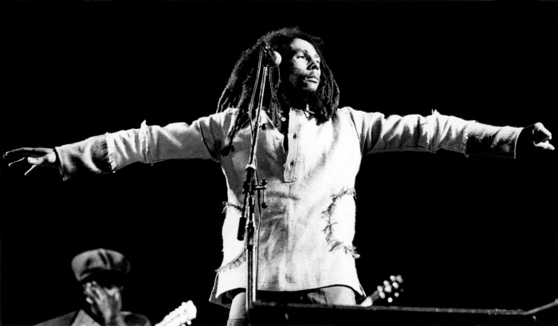

Bob Marley
The person who brought reggae to the world

Bob Marley performs during the One Love Peace Concert in Kingston, Jamaica.
ADRIAN BOOT
The short but productive life of Jamaica's most famous musical son:
- February 6 1945: Robert Nesta Marley is born in Nine Miles, St Ann's, Jamaica, the son of a middle-aged white British naval officer and teenage Jamaican mother.
- 1962: Records his first song in Kingston, Judge Not, recorded by legendary reggae producer Leslie Kong.
- 1963: He forms the original Wailers - then known as the Teenagers - with Peter Tosh, Bunny Livingstone, Junior Braithwaite, Beverley Kelso and Cherry Smith.
- 1963 - 1966: The band, who change their name to Bob Marley and the Wailers, record over 70 songs for producer Coxsone Dodd, including many tracks Marley would re-record to international acclaim in the 1970s.
- 1966: Marley marries soul singer Rita Anderson, a member of The Soulettes and later the I-Threes, with whom he will have five children. Shortly after marrying, he moves to the US to work in a factory.
- 1969-71: The band record with noted Jamaican producer Lee "Scratch" Perry. This period includes many classic tracks such as Small Axe, My Cup and Sun is Shining.
- 1971: Marley forms his own record label, Tuff Gong.
- 1973: Bob Marley and the Wailers sign to Chris Blackwell's Island Records. They release the album Catch a Fire, the first to make a major impression in music markets outside the Caribbean. Livingston and Tosh, however, leave the band to embark on solo careers.
- 1974: Eric Clapton covers The Wailers' I Shot the Sheriff and takes it into the UK top 10, further adding to their reputation.
- 1975: The band release the seminal album Natty Dread, which contains their landmark song No Woman, No Cry. Marley becomes a star all over the globe.
- December 3, 1976: Marley and wife Rita are injured in an assassination attempt in Jamaica. Days later, he takes to the stage with his arm in a sling.
- July 1977: Marley breaks one of the toes on his right foot in a football accident in Paris. Doctors find cancerous cells and remove them.
- 1978: He holds the One Love Peace Concert in Kingston, bringing the leaders of Jamaica's rival political factions to the stage to shake hands.
- 1980: Marley and The Wailers kick off the year with a concert in the newly-independent African nation of Zimbabwe. Later in the year, while jogging in New York's Central Park, Marley collapses. Doctors discover cancer has spread to his lungs, liver and brain.
- May 11, 1981: Marley dies in hospital in the US, aged 36.
- May 1986: The Marley Museum is opened in Kingston, on the site of his former home.
- 1990: Marley's birthday is declared a national holiday in Jamaica.
- 1994: Bob Marley is posthumously admitted into the Rock and Roll Hall of Fame.
“The greatness of a man is not in how much wealth he acquires, but in his integrity and his ability to affect those around him positively.”
-Robert Nesta Marley-